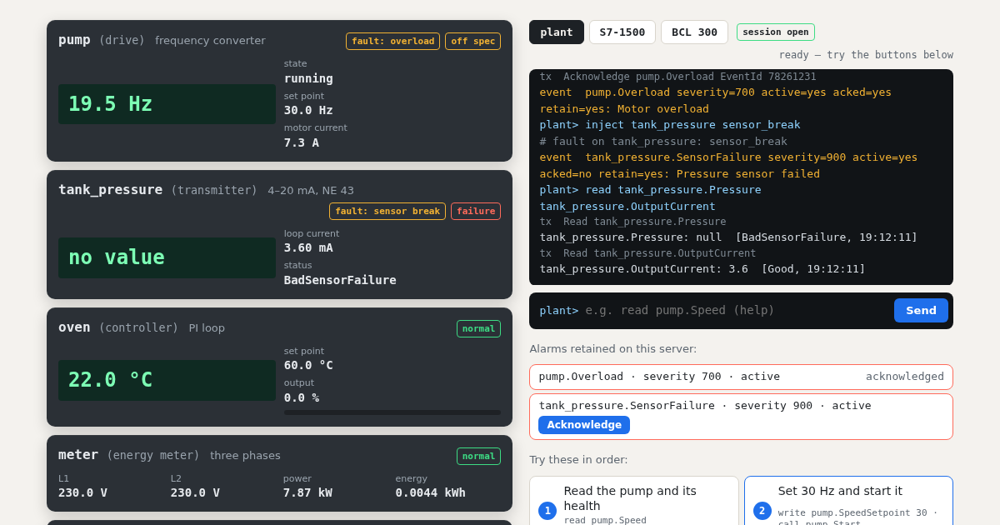

– – –
state–
set point–
motor current–
powering up…
opcua-sim · open source
Demo servers show changing numbers. opcua-sim gives you what breaks client code: status codes, a latched trip, alarms waiting for an acknowledge, a server restart that takes your session with it. Start the pump, then break things. The device code runs right here in your browser.
powering up…
powering up…
powering up…
powering up…
ns=3;s="DB_Line"."Speed"
powering up…
ns=4;i=6205
powering up…
Alarms retained on this server:
Try these in order:
Break something:
The live demo could not start here.
This is what it looks like. Everything below works over real OPC UA with pip install opcua-sim.

What runs here and what does not. The devices, their behaviour, faults and alarm
states on this page are the real opcua-sim code. The OPC UA wire protocol is not: a browser has no TCP
sockets, so your commands reach the devices directly and the tx lines name the service,
not the bytes. This page answers by the same rules, but to test a client you install opcua-sim.
There it is a real server on opc.tcp://, built on
asyncua, checked with asyncua and node-opcua clients.
Health. The badge on each device is its DeviceHealth node, with the
NAMUR NE 107 states: normal, failure, check function, off spec, maintenance required.
Product layouts. The S7-1500 and BCL 300 servers copy how those products present their nodes, as far as public documents describe it. They are not complete copies and were not compared with real hardware. Each profile names its sources and what is assumed.
pip install opcua-sim
opcua-sim serve --bench plant.yaml # the plant from this page, on opc.tcp://127.0.0.1:4840import asyncio
from asyncua import Client, ua
async def main():
async with Client("opc.tcp://127.0.0.1:4840") as client:
idx = await client.get_namespace_index("urn:steitec:opcua-sim")
methods = client.get_node(ua.NodeId("pump.MethodSet", idx))
await methods.call_method(ua.NodeId("pump.Start", idx))
await asyncio.sleep(2)
print(await client.get_node(ua.NodeId("pump.Speed", idx)).read_value()) # about 20.0
asyncio.run(main())And in a test, with a new server for each test:
def test_notices_a_device_failure(opcua_bench):
opcua_bench.inject("drive", "bad_status", variable="Speed", status="BadDeviceFailure")
with pytest.raises(ua.uaerrors.BadDeviceFailure):
read_speed(opcua_bench.url) # your codeAcknowledge with the
right EventId, ConditionRefresh after a reconnect.opcua-sim map prints the address space.